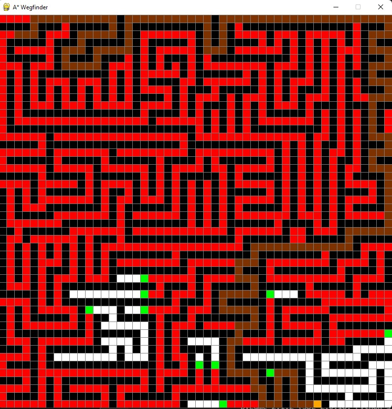
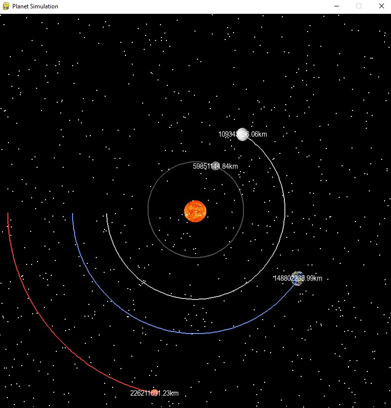
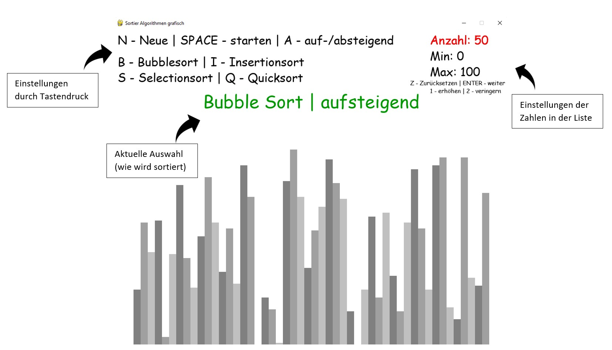
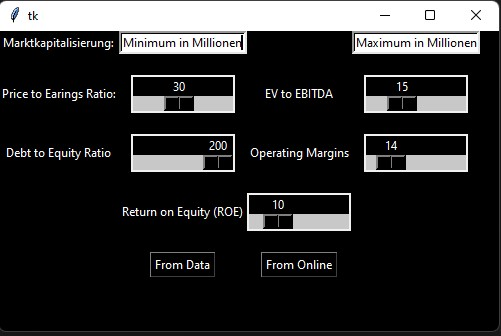
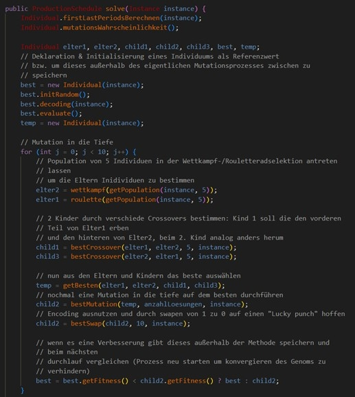

Hi, ich bin Dominik. Ich bin ein 20 jähriger Wirtschaftsinformatikstudent aus Stuttgart.
Aktuell studiere ich im 4. Semester an der HFT-Stuttgart. Mit dieser Webseite möchte ich einen
kurzen Überblick über einige meiner kleinen Software-Projekte geben.

Dieses Projekt implementiert den sog. A* Algorithmus, welchen den kürzesten Weg von einem
Startpunkt zu einem Zielpunkt finden soll.

Die Sonnensystem Simulation basiert auf dem Newton'schen Gravitationsgesetzt.
Es wird
anhand der aktuellen Geschwindigkeit der Planeten und den Anziehungskräften
zu allen anderen Planeten die neue Position errechnet.

Dieses Projekt soll innerhalb einer GUI verschiedene Sortieralgorithmen und deren
Funktionsweise während des sortierens grafisch darstellen.

Der Aktien Screener ist ein in Python geschriebenes Programm, welches die
500 Unternehmen des S&P500 anhand bestimmter Kriterien filtert.

Teil des Operations-Research Moduls war die Entwicklung
eines genetischen Algorithmus zur Lösung von Loßgrößenproblemen